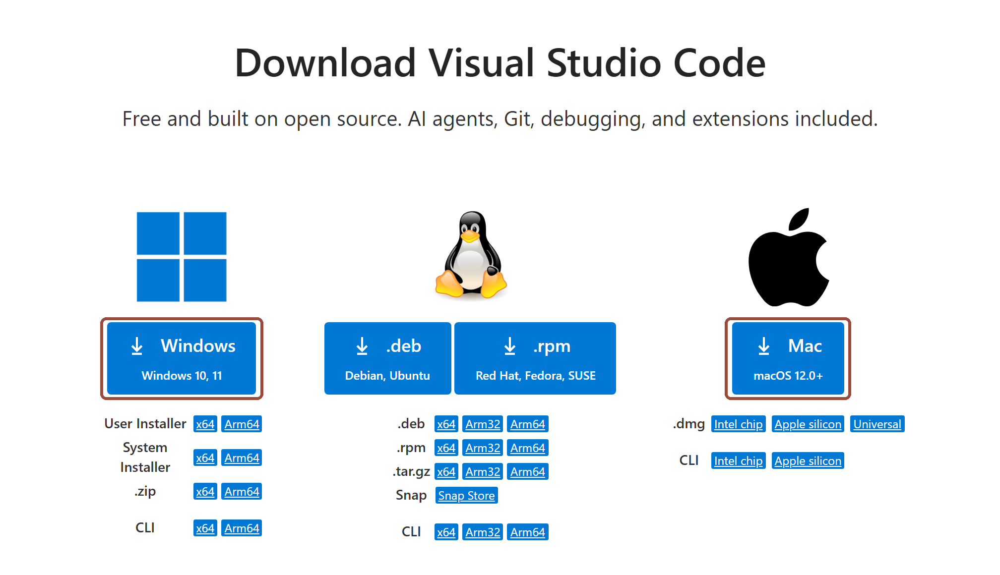
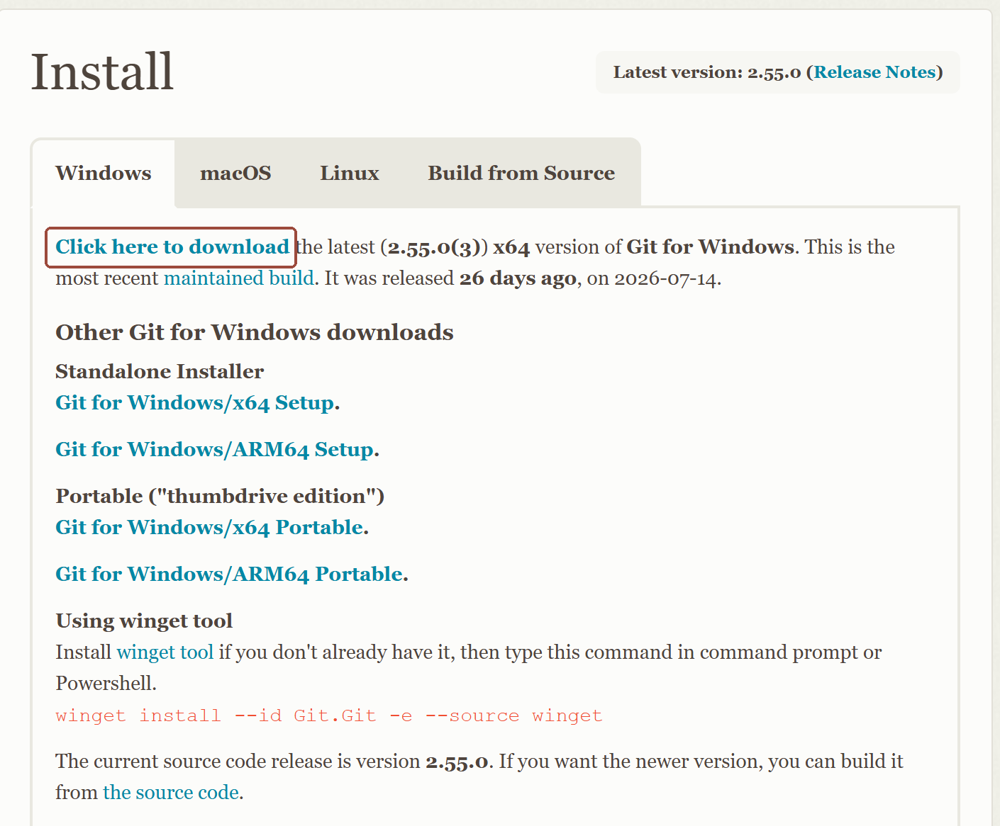
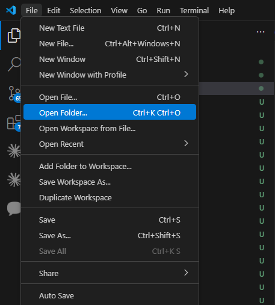
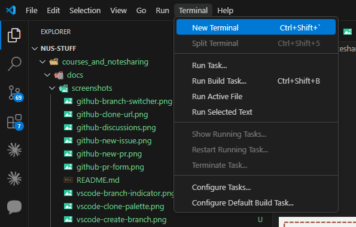
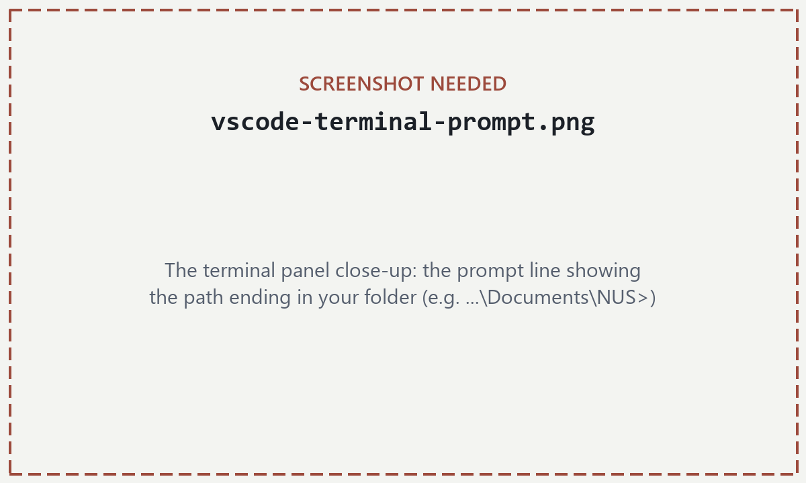
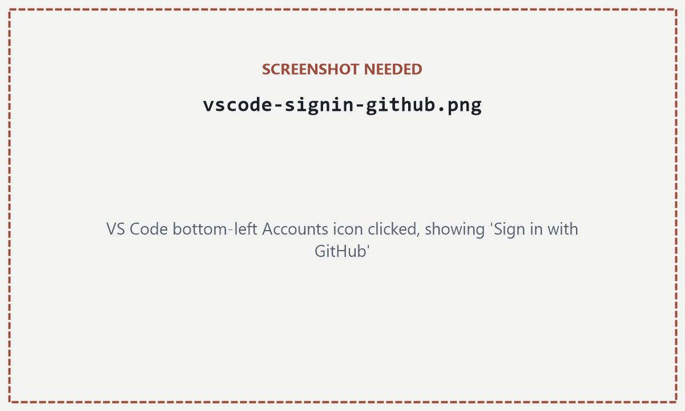
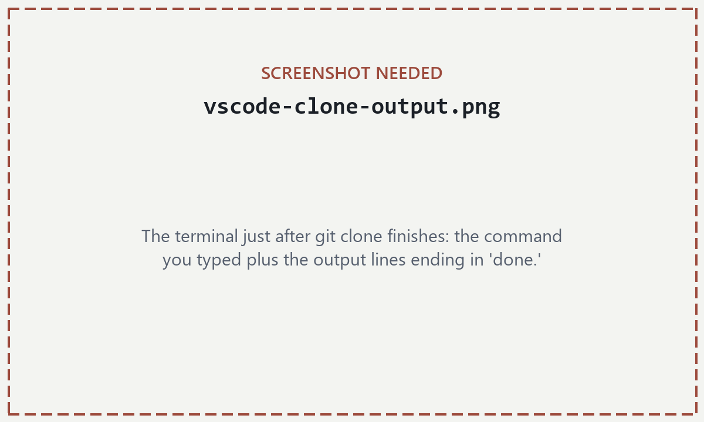
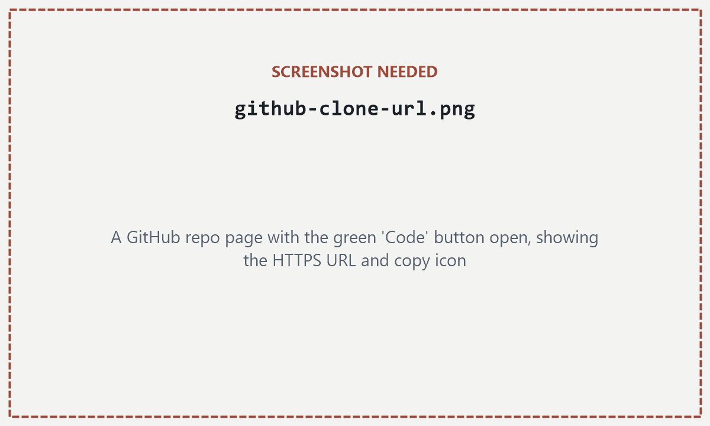

Only if you'll be contributing regularly. Just reading, or making a one-off small fix, needs nothing installed — see the paths in §1.2.
2.1Install the tools
Two programs, installed once each. VS Code is the editor — the window you'll read and write notes in. Git is a separate program with no window of its own: it tracks versions and moves changes between your computer and GitHub. VS Code gives you buttons for Git; Git does the actual work.
Install VS Code. Go to code.visualstudio.com/download, click the button for your system, and run the installer. The default options are fine.

The download buttons for Windows and Mac. Ignore everything below them — the big button is the right one. (Captured from code.visualstudio.com; highlights ours.)
Install Git.
Windows: go to git-scm.com/download/win, click Click here to download, and run the installer. It asks a long series of questions over many screens — click Next through all of them; the defaults are fine.
Mac: nothing to download. Git comes with Apple's developer tools, and macOS offers to install those the first time you type a Git command — which happens in §2.2.

Git for Windows: the highlighted download link. Mac users never need this page. (Captured from git-scm.com; highlight ours.)
Don't look for a Git icon afterwards — there isn't one. You'll see it working in the next section, from inside VS Code.
2.2Get the repo onto your computer
Cloning means downloading a full copy of the repository — every module, every note, and the entire history — into a folder on your computer. It happens once. After that, staying in sync takes two commands: pull brings down other people's changes, push sends up yours.
Cloning downloads a full copy of the repository, history included, onto your computer. pull brings in everyone else's changes afterward; push sends yours back.
Open VS Code and give your copy a home. Go to File → Open Folder…, create a folder wherever you keep uni work — say Documents\NUS — and open it. Everything you clone will land inside this folder.

File → Open Folder…
If VS Code asks whether you trust the authors of the files in this folder, say yes — the only author of your own empty folder is you.
Open the terminal.Terminal → New Terminal. A panel opens along the bottom of the window — this is where every typed command in this guide goes. Click inside it before typing.

Terminal → New Terminal. The panel that opens at the bottom is where commands in this guide get typed.
Check where the terminal is standing. The text before the cursor is the prompt, and it ends with the folder the terminal is currently in. Because you opened your folder in step 1, it should end with that folder's name — something like PS C:\Users\you\Documents\NUS> on Windows, or you@MacBook NUS % on a Mac.

The prompt ends with the folder the terminal is standing in — here, the folder from step 1.
If it points somewhere else, the reliable fix: File → Open Folder… the right folder (step 1), then Terminal → New Terminal — a fresh terminal always starts in the folder that's open. (Typing cd followed by the folder's path does the same thing.)
Sign in to GitHub — before trying to clone. The notes repo is private: each contributor is whitelisted by GitHub username (§1.5), and until VS Code can prove who you are, the download will simply be refused. Click the Accounts icon in the bottom-left corner → Sign in with GitHub → your browser opens → authorize → come back to VS Code.

Bottom-left corner of VS Code → Accounts icon → the highlighted Sign in with GitHub row. The wording may mention Copilot — it's the same GitHub sign-in either way. (Source: VS Code docs; highlight ours.)
While you're here, introduce yourself to Git too — it stamps your name on every change you make:
Any email works; using the one on your GitHub account keeps your changes linked to your profile. The third line picks the simpler behaviour for a command you'll meet later (pull) — set it now and forget it.
Mac only
The first Git command you type may make macOS offer to install "command line developer tools" — that's Git arriving (§2.1). Click Install, let it finish, then run your command again.
Clone. Copy this whole line into the terminal and press Enter:
Progress lines appear, and after a few seconds it ends with something like Resolving deltas: 100% (…), done. That's the entire repository — history included — now sitting in a new courses_and_notesharing folder inside yours.

What a successful clone looks like: the command you typed, then Git's progress lines ending in done.
If it fails
Repository not found means GitHub is pretending the repo doesn't exist because your account isn't allowed to see it: you're not on the whitelist yet, or you're signed into a different GitHub account than the one that was invited — see §1.5. A username/password prompt in the terminal means step 4's sign-in didn't complete — do that first.
Where that long URL comes from, for future reference: every repository's address lives behind its green Code button on GitHub.

The green Code button, then the copy icon next to the highlighted HTTPS URL. This is our own repo page — yours will look exactly like this.
Step into the repo.File → Open Folder… again, and this time open the new courses_and_notesharing folder — it's inside the folder from step 1. Trust the authors when asked; the authors are your coursemates. VS Code reopens with the repo's files listed down the left side — every module, every note, on your machine. What all of that means is next.
2.3What you'll now see
Being written
This section will walk the screen you're now looking at, with real screenshots: the Explorer sidebar with the module folders, the Source Control icon, and the terminal you already know. It's the next piece of this rewrite.
2.4What goes where
Being written
The map of the repository — what each module folder is for, and how note files are named — is moving here from the introduction page, so you meet it while looking at the real folders on your own screen.